At the end of December 2014, I left my post in San Vito and headed north. The destinations were the Caño Negro Wildlife Refuge and the Monteverde Cloud Forest — two of Costa Rica's iconic natural areas, rolled into one New Year trip.
Caño Negro — Wildlife by Boat in a Wetland
Caño Negro is a wetland wildlife refuge in northern Costa Rica, near the Nicaraguan border. Water levels drop in the dry season; in the rainy season, the wetland spreads out wide. The main attraction is the boat tour, slowly working its way along the river while you watch birds, monkeys, crocodiles, and reptiles up close.
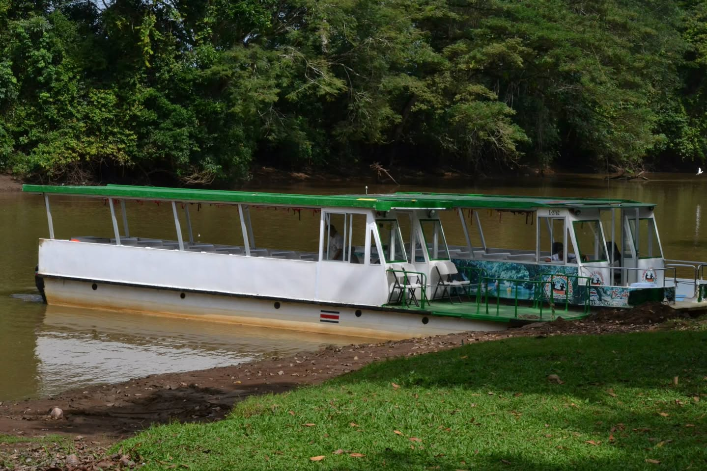
Birds Along the Banks
As soon as we got on the boat, the birds came out. On the driftwood at the riverbank an Anhinga was sun-drying its wings, with a white egret standing right next to it. Anhingas dive to catch fish, but their feathers lack oil and get soaked, so they have to dry their wings like this. A common sight in Costa Rica, but I never get tired of it.
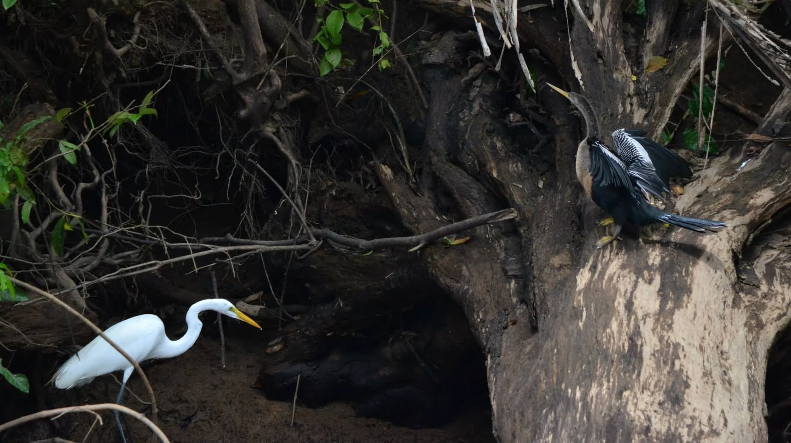
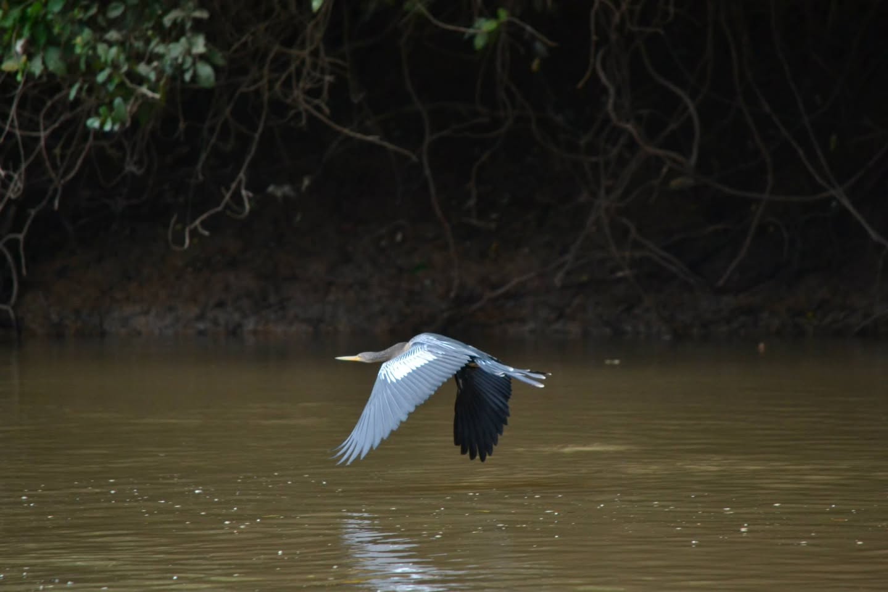
White-faced Capuchins — Looking Down at Us
In the trees along the bank, white-faced capuchins were gathered. The contrast of their white face against a black body is what stands out. They didn't seem inclined to flee — if anything they were studying us. A baby was clinging to its mother's back.
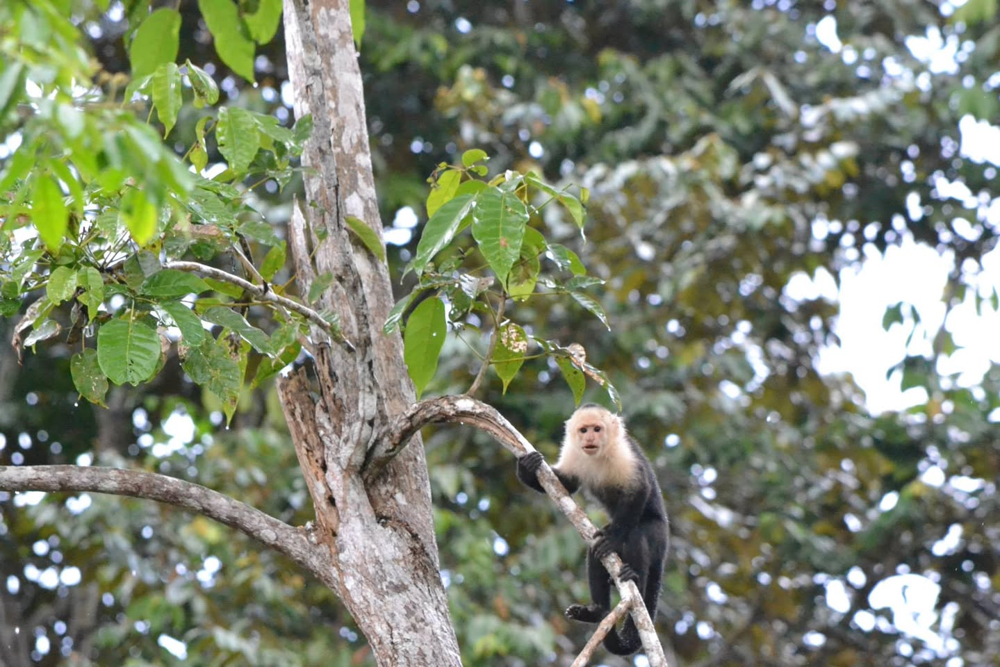
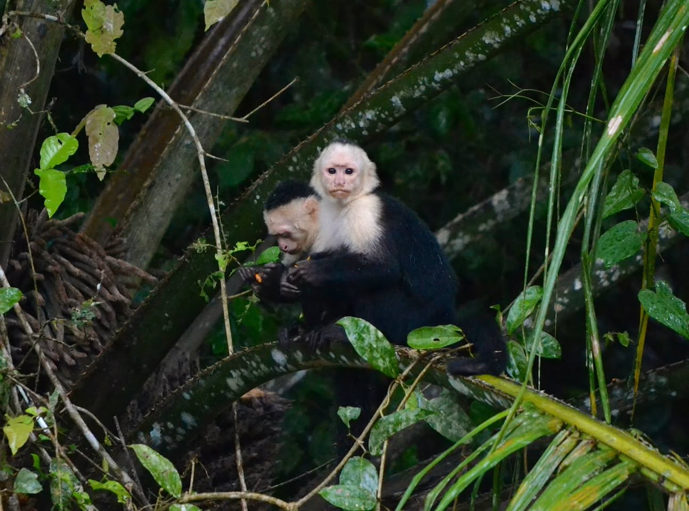
Locals Fishing Along the Same River
On the very river where tourists were taking boat tours to see animals, locals were fishing as a regular thing. Not a special scene at all — the river is part of daily life. That ordinary scene stayed with me oddly long.
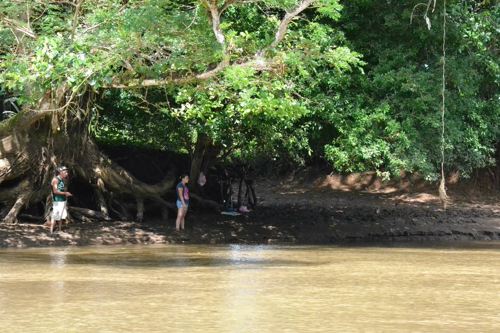
On to Monteverde — A Cloud Forest Town
From Caño Negro, we passed through La Fortuna and made our way to Monteverde. Monteverde is a cloud forest in central Costa Rica's mountains, sitting between 1,400 and 1,800 meters. It's wrapped in mist year-round, which shapes a particular ecosystem.
When we arrived a fine drizzle was falling. That's how Costa Rica's cloud forests always are. It's part of the air there.
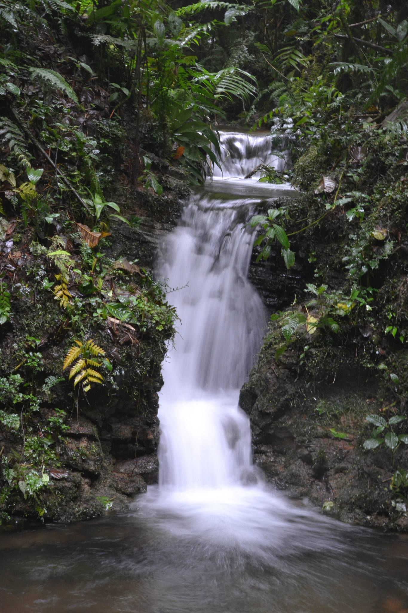
Sloths — Up in a Branch in the Drizzle
Walking the trail with a guide at Monteverde, he told me to look up. A three-toed sloth was hanging in a tree branch, slowly eating leaves through the mist. If you don't know to look, you walk right past.
It's basically a creature whose job is not to move, but its presence is undeniable. I felt I could watch it for hours.
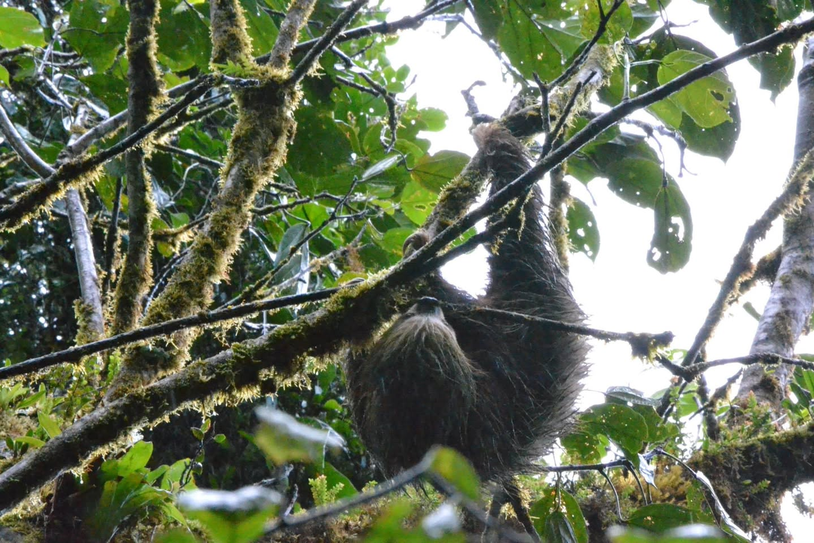
Blue-crowned Motmot — One of Costa Rica's Most Beautiful Birds
On a stone wall near my lodging, a bird I'd never seen was perched. Blue-green plumage, an orange chest, a long blue tail. The Blue-crowned Motmot. A common sight in Costa Rica, but in person more vivid than any photo. I couldn't move for a while.
It just stared at me. No sign of flying off — almost like it was posing.
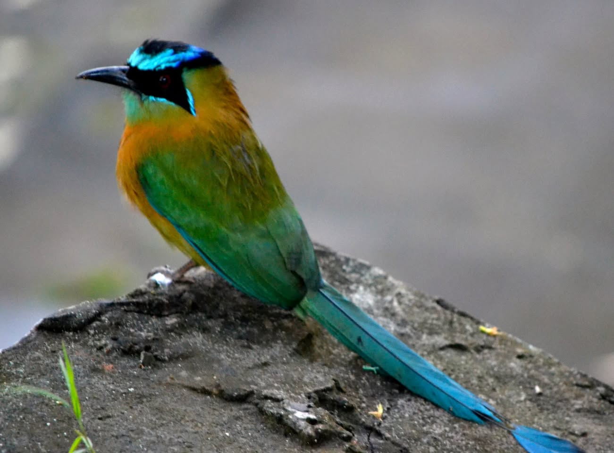
Night Tour — What You Find After Dark
I joined Monteverde's night tour. With the guide's flashlight, completely different creatures came out. Frogs, snakes, insects — the night forest was livelier than the day. The guide carefully named each one. Frogs that look indistinguishable in the dark suddenly show clear patterns under a beam of light.
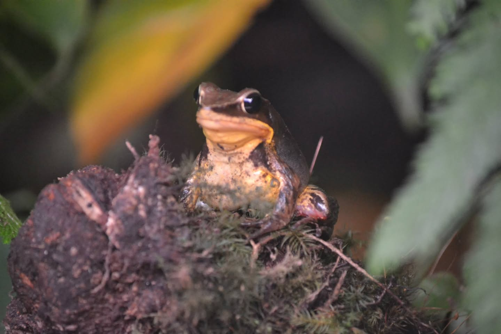
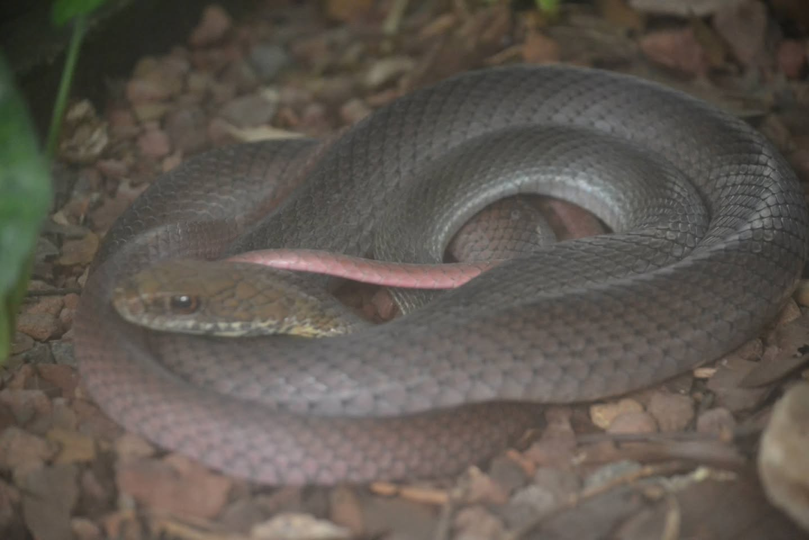
Morning with a Coati
The next morning, walking the trail, a coati was on the ground. Long snout, tail held upright — a creature somewhere between a raccoon and a tanuki. They usually move in groups in Costa Rica, but this one was alone, digging at the earth. We walked together for a while.
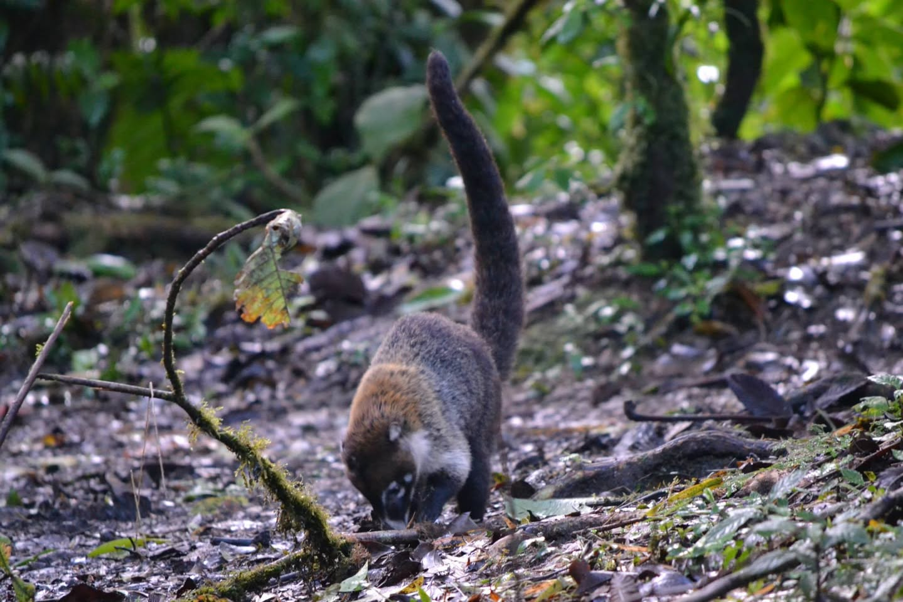
Watching capuchins on a boat at Caño Negro, meeting a sloth at Monteverde, lighting up the night with a guide. I knew Costa Rica was a country surrounded by nature, but seeing this much wildlife in one trip drives the point home all over again. Glad I worked this trip into the last stretch of my volunteer assignment.